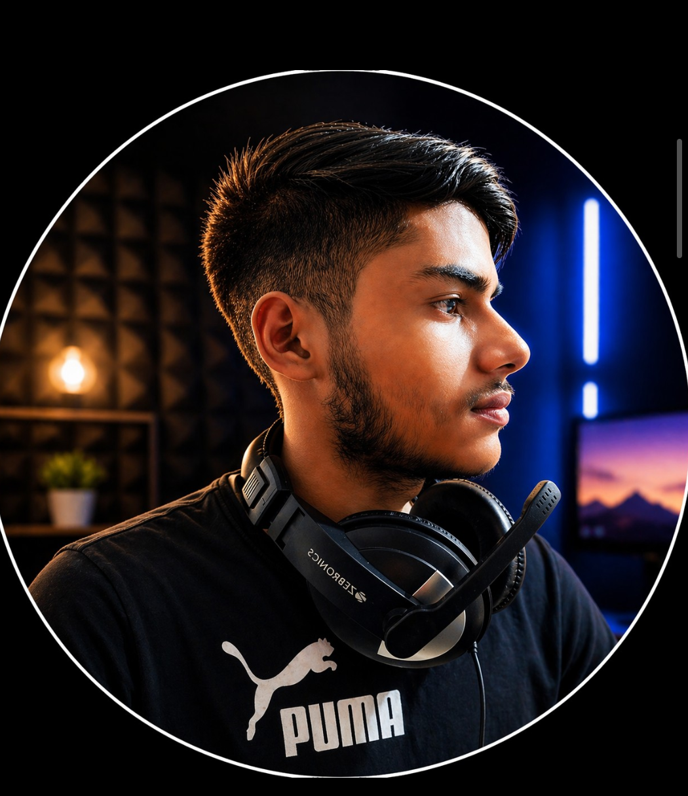

Former School Vice Captain
Class XII • Kendriya Vidyalaya IIM Lucknow
Hello! I am Shaurya Kumar Singh, a Class XII student at Kendriya Vidyalaya IIM Lucknow. I am passionate about medicine, sports, technology, music, and continuous learning.
My goal is to qualify NEET and serve the nation as a doctor through the Armed Forces Medical College (AFMC). Alongside academics, I enjoy building creative projects, learning sound engineering, creating YouTube content, and studying Vedic astrology and palmistry.
As the Former School Vice Captain, I actively supported school administration, coordinated student activities, encouraged discipline, represented students, and contributed to organizing school events and sports competitions.
I enjoy music production, sound engineering, and audio editing. I continuously learn audio mixing, mastering, beat production, and digital music creation using modern software and hardware.
I create educational, devotional, and creative digital content on YouTube. My work includes AI-assisted videos, spiritual content, music, and informative projects.
Certificates, medals, trophies, and achievements from academics, badminton tournaments, leadership roles, music, and other activities will be showcased here.
Photos from tournaments, school events, leadership activities, certificates, music projects, and memorable moments will be added here.
Thank you for visiting my website.
For collaborations, academic opportunities, sports, or professional queries, please contact me through my official social media profiles or email (to be added).